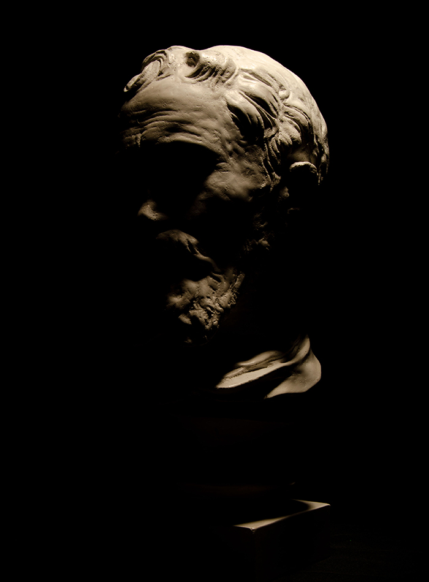
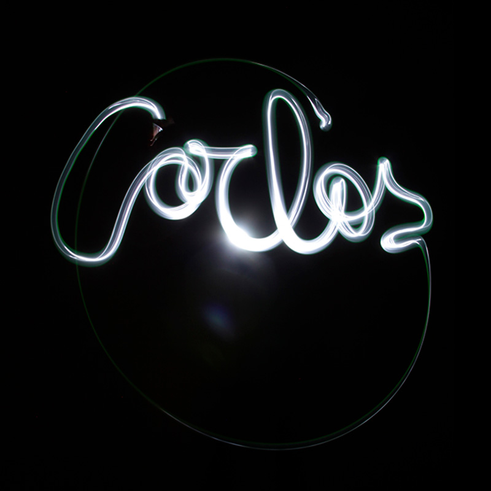
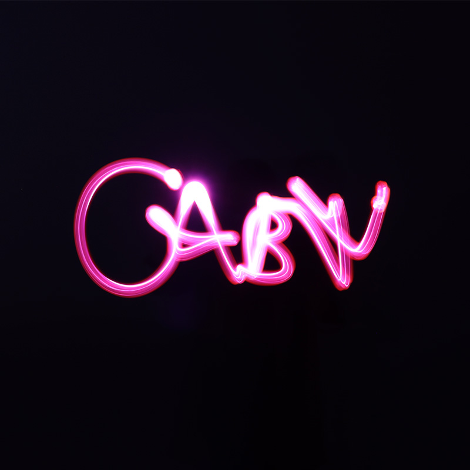
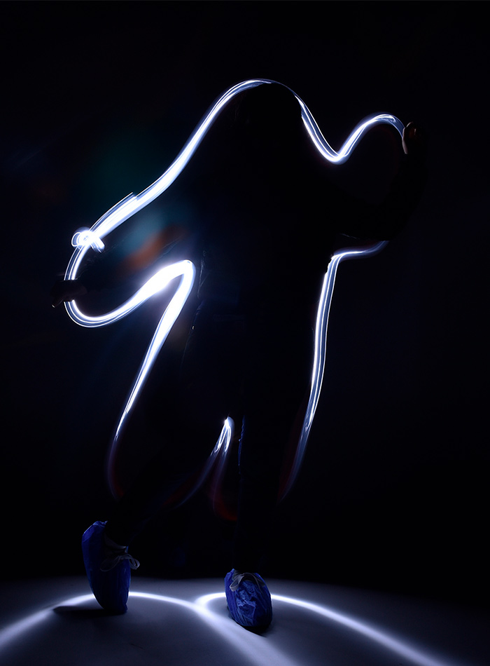

En Estudio
"Un espacio para crear y producir sin límites"
El trabajo en el estudio fotográfico ofrece a los estudiantes la oportunidad de adentrarse al mundo profesional de la fotografía a partir de la planeación y puesta en escena de diferentes producciones, con fines académicos. Los dos estudios con los que cuenta nuestra Facultad de Artes y Diseño en su edificio, alojan y reciben cientos de estudiantes y profesores, semana a semana, para realizar sus prácticas y proyectos.
Ambos espacios, tanto el estudio pro, como el estudio básico, cuentan con condiciones especiales de distribución, así como también equipamiento indicado para el registro, iluminación y medición, como centro de trabajo que permite desarrollar plenamente las prácticas profesionales.
CARLOS ROJAS
EKATERINA MOYANA
GABRIELA BORJA
LORENA ERAZO

MARIA PAULA TORRES
MICHELLE RIOS
NICOLÁS SÁNCHEZ
PAOLA GARZÓN

SEBASTIAN AGUDELO
VALENTINA CUSPOCA
XIOMARA RAMIREZ
ANA CERON
LINA SANTAMARIA
MICHELLE RIOS
VALENTINA CASPUCA
CAMILA AUZA

CARLOS LUNA

GABRIELA BORJA

XIOMARA RAMIREZ
MICHELLE RIOS
SEBASTIAN AGUDELO
SEBASTIAN AGUDELO
XIOMARA RAMIREZ
VALENTINA CASPUCA
Lightpainting.
Los estudios se adaptaron y prepararon para la primera práctica del periodo 2020-2S, con énfasis en la identificación de las direcciones de la luz a partir del trabajo con elementos tridimensionales blancos. La propuesta se enmarca en el montaje y manipulación de luces de flash y otros equipos y accesorios que se requieren en el trabajo de estudio, armando y reconociendo esquemas de iluminación con una luz, dos luces y con iluminación completa (triangulación).
Fotomontaje.
Los estudios se adaptaron y prepararon para la primera práctica del periodo 2020-2S, con énfasis en la identificación de las direcciones de la luz a partir del trabajo con elementos tridimensionales blancos. La propuesta se enmarca en el montaje y manipulación de luces de flash y otros equipos y accesorios que se requieren en el trabajo de estudio, armando y reconociendo esquemas de iluminación con una luz, dos luces y con iluminación completa (triangulación).